ASRO AI
AIを、もっと自由に。KuupやAsraを通じて、知能を身近な存在に。

ASROINNOVATION BEGINS WITH POSSIBILITY
数千の光が、ひとつの未来になる。
ASROは、AIとデジタル技術、クリエイティブな発想を組み合わせ、新しい体験を届けるプロジェクト。いくつものサービスが、ひとつの未来につながっていく。
学ぶこと、つくること、つながること。ASROのサービスが新しい選択肢を広げていく。
AIを、もっと自由に。KuupやAsraを通じて、知能を身近な存在に。
創造に、境界はいらない。MootやMoot Pointで、表現を次のステージへ。
情報と人をつなぎ、毎日を少し便利に。コミュニケーションの新しい基盤。
さまざまなサービスをひとつにつなぐ。安心して使える共通アカウント基盤。